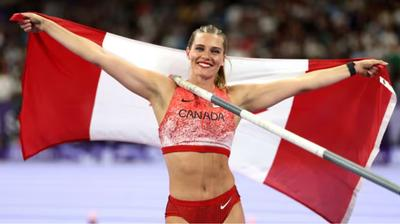

女子撑竿跳选手纽曼(Alysha Newman)今天为加拿大夺得一枚铜牌。她跳出4.85米的成绩，刷新了加拿大的纪录，她并且是112年以来，再次取得女子撑竿跳奥运奖牌的加拿大选手。
上次加拿大在女子撑竿跳项目夺得奖牌时是1912年的斯德哥尔摩奥运，当年加拿大选手William Halpenny取得了铜牌，此后便无奖牌，一直到纽曼今天取得了铜牌。
今年30岁的纽曼来自安省的Delaware，她取得的4.85米成绩与银牌的美国选手Katie Moon相同，但纽曼有一次没有跳过，所以排名在美国选手之后，取得了铜牌。
女子撑竿跳的金牌 则是由澳洲选手Nina Kennedy夺得，她跳出4.90米的成绩。
纽曼在赢得铜牌后说，她在东京奥运没有拿牌，在里约奥运也没有拿牌，两次她都没有能表现出自己最好的成绩，她将所有的希望都放在这一届巴黎奥运，真的拿牌了。